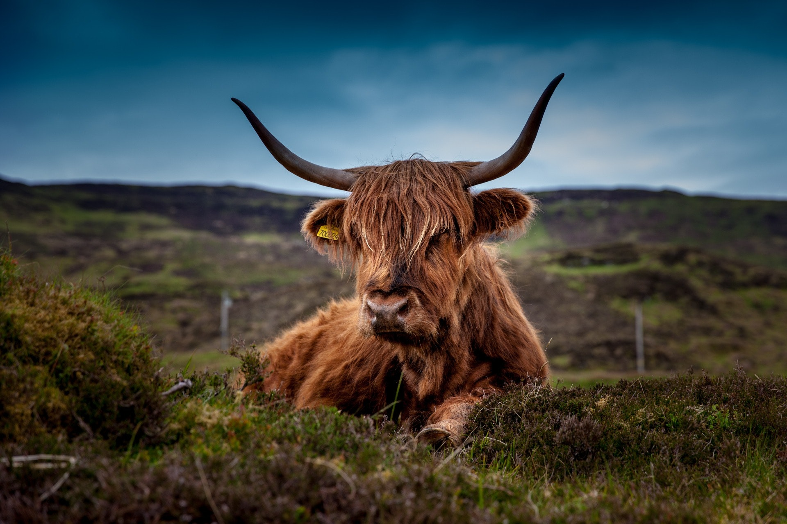
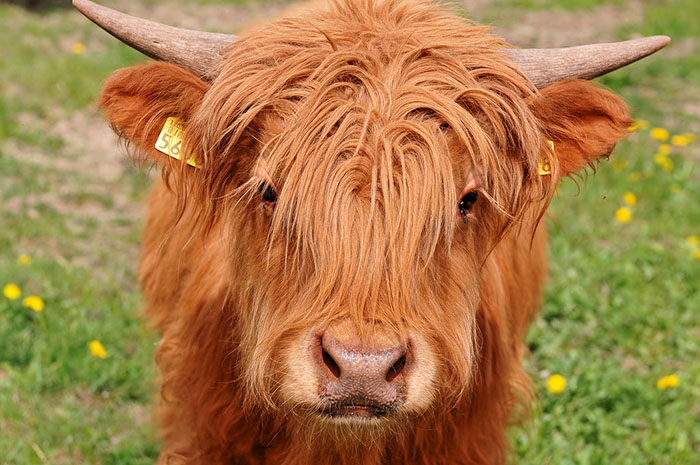

You've probably seen pictures of these cows pop in your social media – just a simple image of a fluffy, long-haired cow to brighten your day. Or perhaps you remember the 'emo cow' meme from several years ago, or that time when Iowa's fluffy cows went viral?
No matter how you've come to adore these creatures, have you ever wondered where you could actually see one in person, or where they come from? All of those questions and more will be answered alongside even more adorable pictures of these majestic cows.
First Off: Why are they so fluffy?
These cows have such a distinctive coat to assist with cold tolerance. How they achieve such a legendary status of floof (definitely not a scientific term) is through a double coat of hair. The outer layer consists of oily hair, while the undercoat is soft and fluffy.
'Emo cows' are actually Highland cattle
This breed of rustic cattle originated as early as the 6th century in the Scottish Highlands and the Outer Hebrides islands. They're easily identified by their shaggy coats and long horns – and for being unfathomably cute to look at.
Predominant coat colors might be due to the Queen's preference
Highland cattle can appear in a rainbow of different colors, including dun, red, black and white. It's been said that red has become the color seen most often due to a reported remark from Queen Victoria on a visit to the Scottish Highlands. She allegedly expressed her preference for the red-colored cattle, and selective breeding began in an effort to please her.
What are they like?
You would think an animal that's this off-the-charts cute would be super friendly, right? In this case, you'd be correct. Highland cattle are actually famous for having amazing temperaments. You should still be careful around them; they are much bigger than you, after all. But there's no need to fear them should they approach you in a welcoming manner.
Where are Highland cattle now?
You're sure to still find herds of Highland cattle in Scotland, but they've also been imported to other countries around the globe. That includes the United States, Canada, Australia, Finland and Denmark.
All of this information above was taken by:
www.10best.com/interests/explore/fluffy-cows